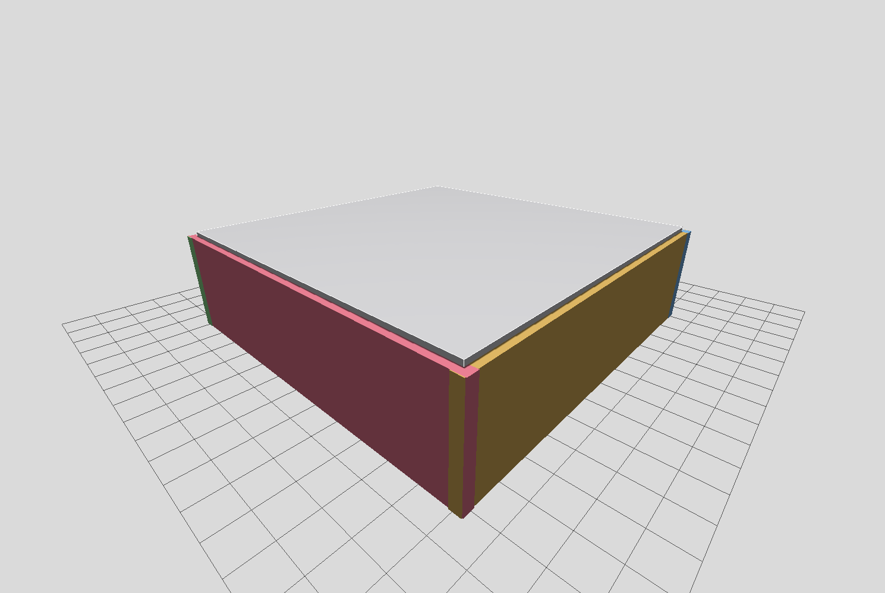
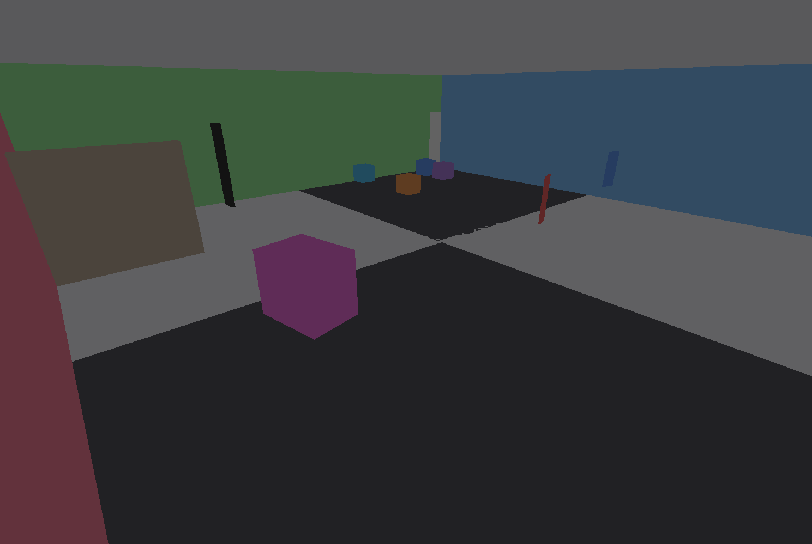
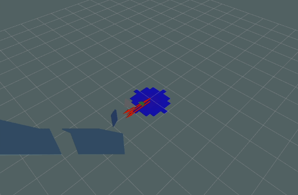

In Action
From simulation to map





A fully simulated indoor UAV that builds a 3D map of unknown environments using RGB-D SLAM, avoids obstacles on its own, and detects gas hazards in real time — all in one ROS 2 pipeline.
The drone perceives, maps, navigates, and senses simultaneously. Each block runs as an independent ROS 2 component, bridged together into a single integrated system.
A custom UAV with an RGB-D camera flies through an indoor world full of obstacles.
RGB-D visual odometry and pose graph optimization build a consistent 3D map with loop closure.
A finite-state controller reads depth data and steers the drone clear of obstacles.
A simulated sensor models gas dispersion and paints a live chemical map of the space.
Real-time 3D mapping and loop closure with RTAB-Map, producing globally consistent maps from a single depth camera.
A depth-guided finite-state machine handles forward motion, turning, reversing, and corner-escape behavior without a pre-built map.
A Gaussian dispersion model drives a simulated gas sensor, and a chemical mapper overlays concentration onto the environment.
RViz shows RGB, depth, point cloud, trajectory, the live map, and the gas overlay together in one view.



A custom research drone model — not based on any commercial aircraft — sized and sensed for SLAM and gas-mapping experiments.
Supervised by Asst. Prof. Dr. Banu Kabakulak